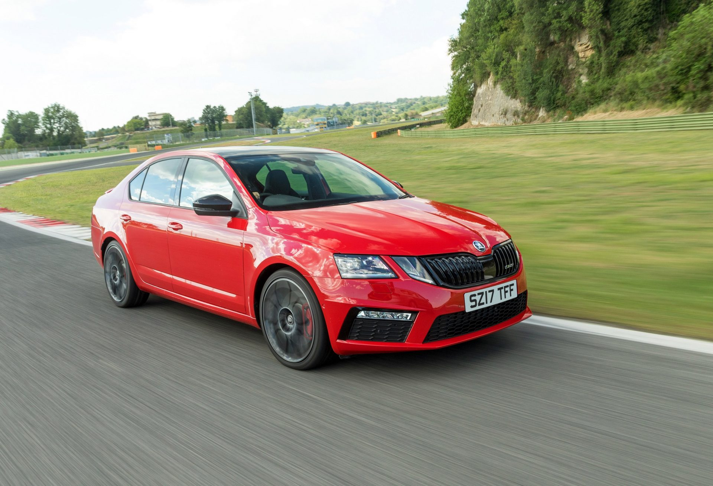

Skoda
Simply Clever

All new powerful Octavia Vrs 230
Based on the MQB modular architecture, the Octavia RS 245 carries forward its transverse engine and front-wheel-drive layout. Its dimensions and styling are identical to the outgoing version. One of the key new additions are its stylish 18-inch wheels, compared to the 17-inchers on the RS 230. Curiously, this RS 245 appears a lot higher above the ground than the outgoing version, with an ungainly gap in its wheel arches. Skoda, however, claims its ground clearance remains identical to its predecessor, at 141mm, which is 15mm lower than the now-discontinued Octavia sedan, but 15mm higher than the international RS version.